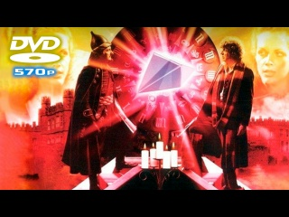
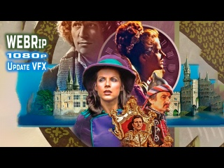
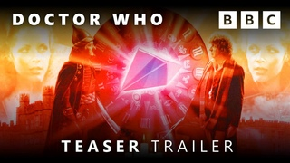

Субтитры: Русские и Английские |  |
|---|---|
с фанатским обновлением визуальных эффектов (cunningmunki) Субтитры: Русские и Английские |  |
The Androids of Tara
Дата выхода: 25 ноября - 16 декабря 1978
Формат: 4 эпизода по 25 мин.
|
Очередной фрагмент Ключа Времени приводит Доктора и Роману на Тару — планету, где средневековые нравы соседствуют с искусством создания точных андроидных копий людей. Пока Доктор охотится за фрагментом, Роману принимают за принцессу-беглянку, и вскоре оба оказываются в гуще дворцового заговора: жаждущий власти граф Грендель использует двойников, чтобы захватить престол. Авантюрный плащ-и-шпага с фехтованием, интригами и романтикой по мотивам «Узника Зенды» Энтони Хоупа. Четырёхэпизодная серия, снятая почти целиком в поместье Брэй-студио на натуре — редкая для сериала экономия на декорациях, пошедшая на пользу атмосфере.
 VHS - май 1995 |   DVD+Boxset - 24 сентября 2007 * Версия в нашей группе |
|---|

